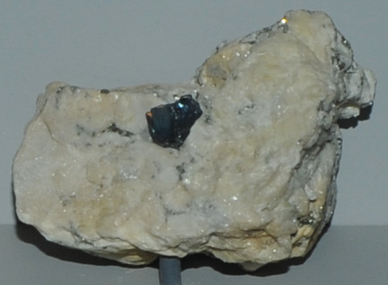

|

| Pb14(As, Sb)6S23
This sample of jordanite is displayed in the Smithsonian Museum of Natural History. Jordanite is an sulfide mineral of lead, arsenic and antimony with the composition Pb14(As, Sb)6S23. This sample is about 5x4 cm and is from Lengengach quarry, Imfeld, Binnatal, Valais, Switzerland.
|